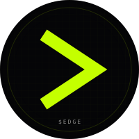
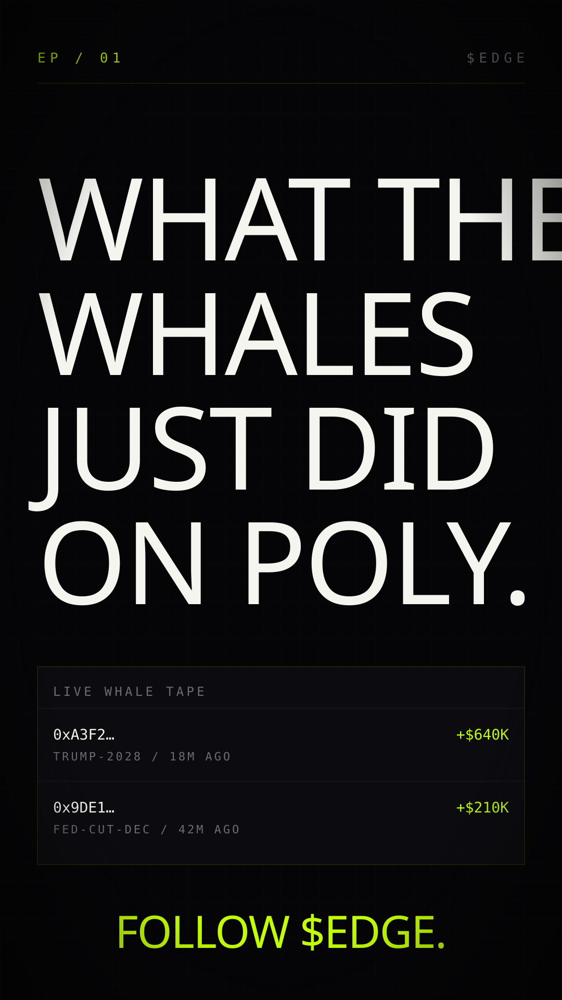

03.07 / Social Asset Pack · TikTok
TikTok. Hook in 1.5s.
PFP 200×200. No native banner — we ship a 1080×1920 vertical cover for pinned video #1. 3 pinned slots, each a different conversion path.
PFP
03.07.01 · 200×200 · circle

200 × 200 · SVG
200 × 200 · circle render
Pinned Video #1 Cover
03.07.02 · 1080×1920 (9:16)

1080 × 1920 · SVG · pinned-video cover image
Bio
03.07.03 · 80 char max
Primary · 80
Bio
Money. Mouth. Edge. Polymarket + Kalshi, in one screen.
Pinned Video Slate
03.07.04 · 3 pins
Pin #1 · what is $EDGE · 15s
Hook + product + tagline
[0.0s] (silence, hard cut to terminal screen capture) [0.5s] "Watch this wallet." [2.0s] (highlight a $640K Poly entry on Trump-2028) [3.5s] "$640K in. 18 minutes ago. Polymarket." [5.0s] (cut to X timeline) [6.0s] "Meanwhile on X — same market, sentiment down 41%." [8.0s] (cut back to terminal, zoom on Divergence radar) [9.5s] "Mouth says no. Money says yes. That's the edge." [12.0s] (zoom to product hero) [12.5s] "$EDGE. The terminal for prediction markets." [14.0s] (end card: lime chevron, "follow + site link") [15.0s]
Pin #2 · whale of the day · 12s template
Daily whale rotation
[0.0s] (text on screen: "WHALE OF THE DAY")
[1.0s] (cut to wallet detail page)
[2.0s] "{wallet} dropped {amount} on {market}."
[4.0s] (cut to market chart with the entry marker)
[6.0s] "Their last 5 calls: {hit rate}."
[8.0s] (cut to following-this-wallet UI)
[10.0s] "Watch this wallet next time. $EDGE."
Pin #3 · divergence tutorial · 30s
The conversion video
[0.0s] "Two markets. Same outcome. Different odds." [2.0s] (side-by-side Polymarket + Kalshi on same question) [4.0s] "Polymarket: 0.51. Kalshi: 0.42." [6.0s] "Difference: 9 cents. That's divergence." [9.0s] (zoom to divergence radar) [11.0s] "$EDGE sorts every market by this gap, live." [14.0s] "Big gap + whale flow same direction = highest-conviction trade signal we have." [18.0s] (cut to picker algo track record) [19.5s] "Our public picker hit-rate from this method: 64% last quarter." [22.0s] (zoom to site URL) [24.0s] "Open the terminal. Sort by divergence. Read top to bottom. That's the playbook." [28.0s] "$EDGE. Watch the action. Before you bet." [30.0s]
Bio-Link Strategy
03.07.05
Under 1K followers: bio link is hidden. Cover the URL in every video's on-screen text at
~14s. End every caption with edge-two-psi.vercel.app. Pin a self-comment with the link on each video.1K+ followers: link a launch splash with three buttons — TERMINAL / TOKEN / DISCORD. Update weekly with current whale of the week and divergence of the week.
Pin order:
#1 (what is $EDGE) → #3 (divergence tutorial) → #2 (today's whale, rotates daily). The tutorial converts. Pin it.Setup Notes
03.07.06
Create Business account – required for analytics + verified link. Category: Finance.
Upload
pfp.svg exported to 200×200 PNG. Confirm it reads at 50px (TikTok comment list).Record + post Pin #1 first. Use the 1080×1920 cover. Hook in 1.5s.
Set cadence: 1 post/day for first 30 days, then 4–5/week. Whale-of-the-day templates make this sustainable.
No music with vocals. Soundscape: terminal taps, brief synth pad, or silence. The screen capture is the protagonist.
Reserve impersonator handles:
@edgeterminal_, @edge.terminal, @theedgeterminal. Park them with the chevron PFP and a single video pointing to @edgeterminal.